Home › Guides › Songs and patterns
Songs and patterns
Find a song, build one in seconds, type one, or edit every bar of it.
The Library
19 demo songs to start with, plus everything you make.
- On Play, tap the library key; the tab bar then reaches Library, Setlists, Kits and Settings.
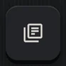
- Filter by genre chips or search. Tap a song's name to open it on Play.
- The ••• key on a song: Play, Edit song, Edit as text, Duplicate, Add to favorites, Add to setlist, Share, Export audio, Delete (with undo).
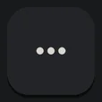
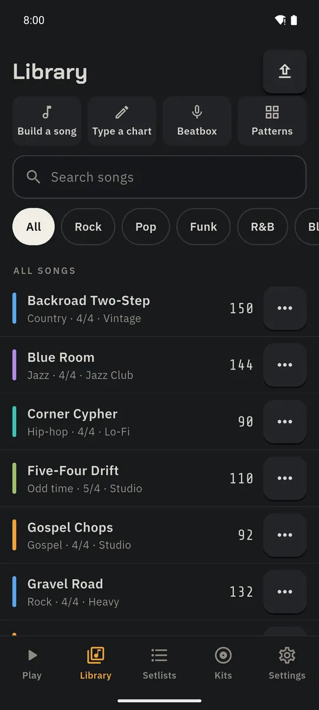
Song Builder
Genre + form → a complete, playable song.
- Library → Build a song.
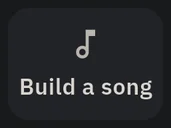
- Pick a genre and a form (Pop, Rock, AABA, 12-bar blues, Folk, Build/drop, Jam), and a tempo, then BUILD SONG.
- For any section: 🎲 rerolls it; ⇄ opens the pattern browser already filtered to the song's genre, feel and tempo.
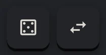
- REROLL ALL starts over; SAVE & PLAY keeps it and opens it on Play.
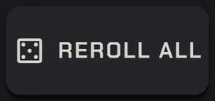
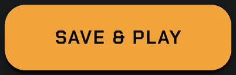
At the bottom of Song Builder, Build by beatboxing makes a song from your voice: see the Beatbox guides.

Quick Chart
Type a song the way musicians write charts on a napkin.
- Library → Type a chart (or a song's ••• → Edit as text).
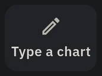
- Type the tempo, meter, genre and sections, e.g.
@120 4/4 rock I2 V8 C8 V8 C8 O2. Section letters:Iintro,V/Averse,P/Bpre-chorus,Cchorus,Brbridge,Ssolo,Bkbreakdown,Ooutro; the number is bars. - Extras:
(V8 C8)x2repeats,[2/4]an odd bar,Br8:3/4another meter,C8@+10orBr8@halftempo changes,C8{stop 8.1}cues,V8'a variation,O2~ring-out,"vocals in"a cue note. The shortcut keys type them for you.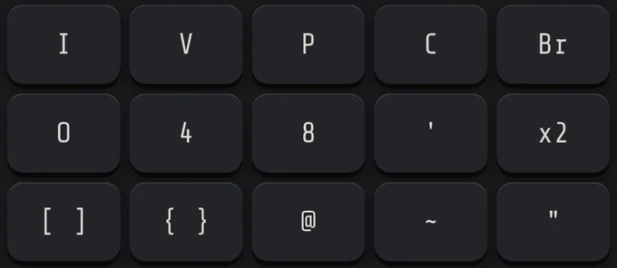
- Mistakes are underlined with a plain-English fix; tap it to apply.
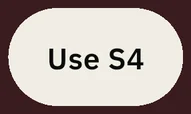
- SAVE & PLAY. Grooves are picked for the genre, so it plays right away.
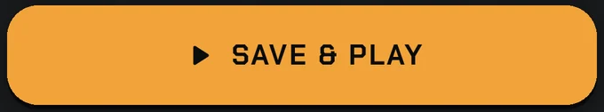
Commas, new lines and lowercase are fine, so you can paste a chart from a message.

Song Editor
Every detail of a song, in four tabs.
- A song's ••• → Edit song.
- Sections: each section's groove, fills, end fill, intensity, cue note, meter and tempo. Edit the Chorus once and every Chorus changes. ▶ auditions it.
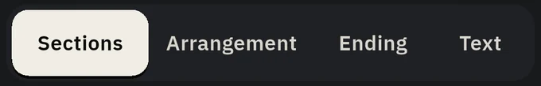
- Arrangement: drag steps to reorder, − / + bars, tap a step to duplicate, remove, add a note or cues, or insert odd bars.
- Ending: fixed, ring-out or ritard. Text: the whole song as a Quick Chart.
- Tap SAVE; ▶ opens it on Play.
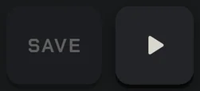
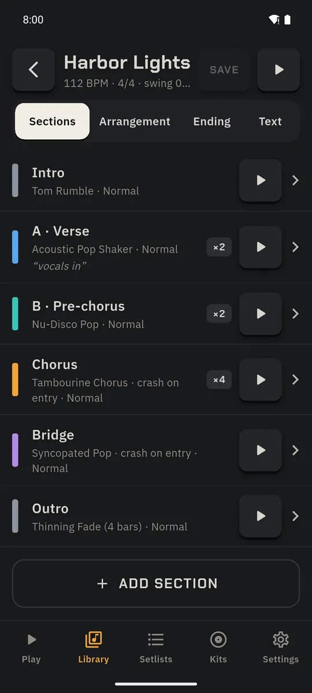
Cues: stops, hits and tacets
The band stop on beat 3 of the last chorus bar? Write it in.
- Song Editor → Arrangement → tap a step, then Add cue.
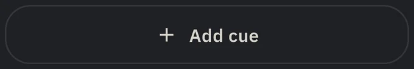
- Choose the bar and beat, then Stop (drums cut), Hit (kick + crash, groove continues), Hit + Stop, Resume (with a fill, sticks or nothing) or Tacet (no drums for some bars while time keeps running).
- ADD CUE, then SAVE. On Play the block shows a small marker and “STOP on 1” flashes one bar early.
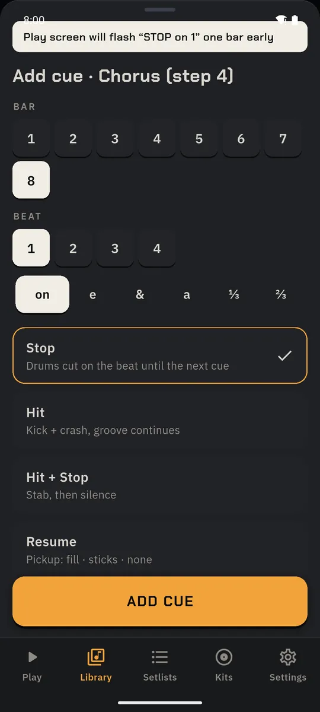
Pattern Browser
300 original patterns: 200 grooves, 50 fills, 25 intros, 25 endings.
- Library → Patterns.
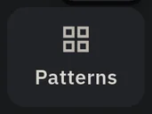
- Filter by kind, genre, feel, meter and “fits” the current tempo; the sliders key adds tempo, complexity, energy and sort.
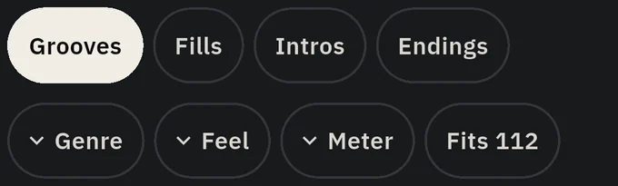
- Tap a card to hear it loop at your tempo with your kit; tap again to stop. Long-press for a favourite. Use “Similar” to find neighbours.
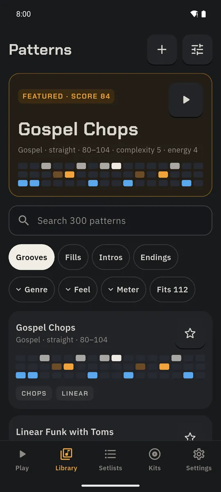
Pattern Editor
Make your own groove on a step grid.
- Patterns → +.
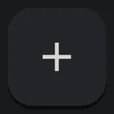
- Choose 16, 32 or triplet steps. Tap a cell to add a hit, tap again to remove it; long-press for velocity (ghost, normal, accent). + Row adds instruments.
- Tap-record lets you play it in instead.
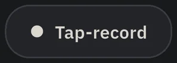
- ▶ loops it; ✓ saves it. Use it in any song section.
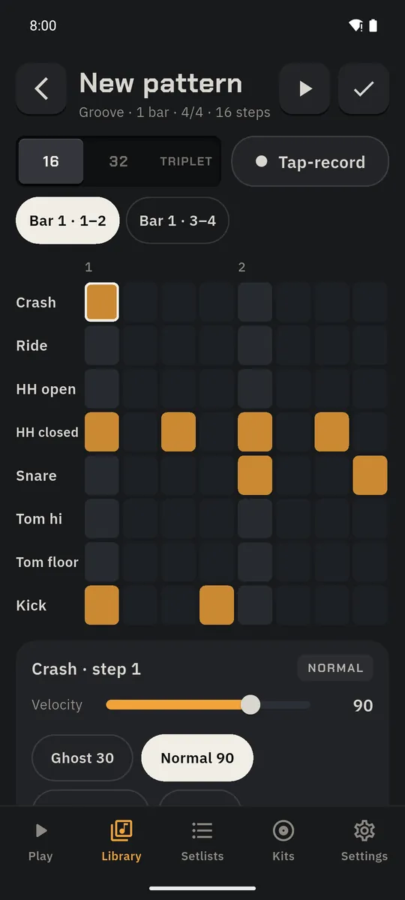